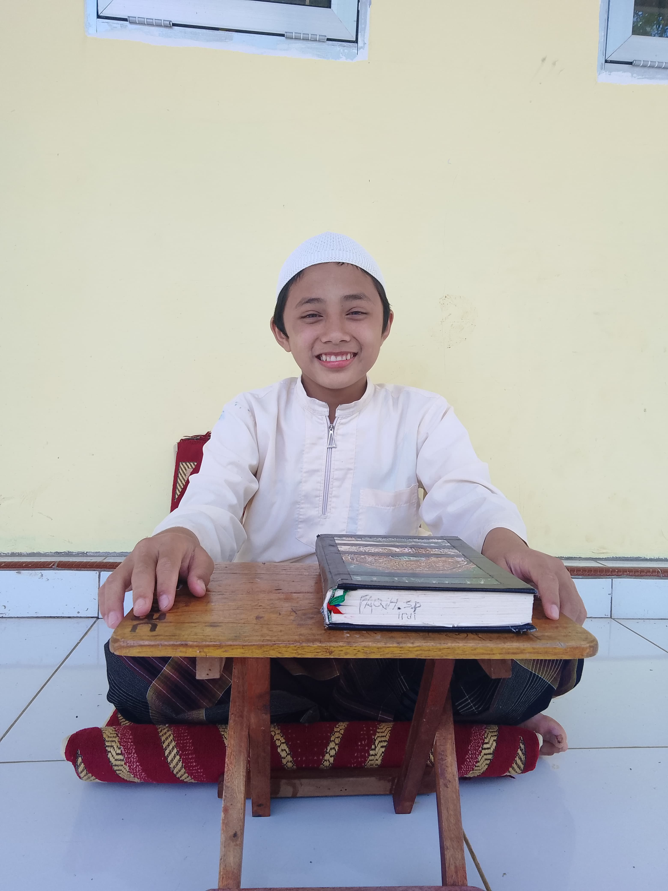
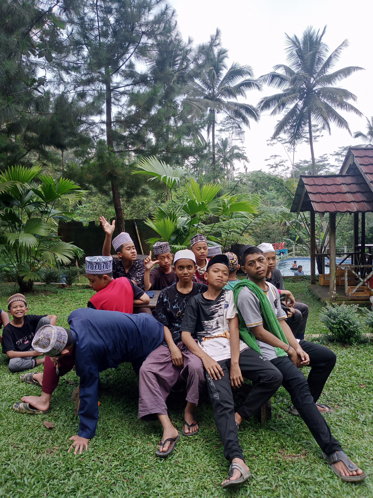
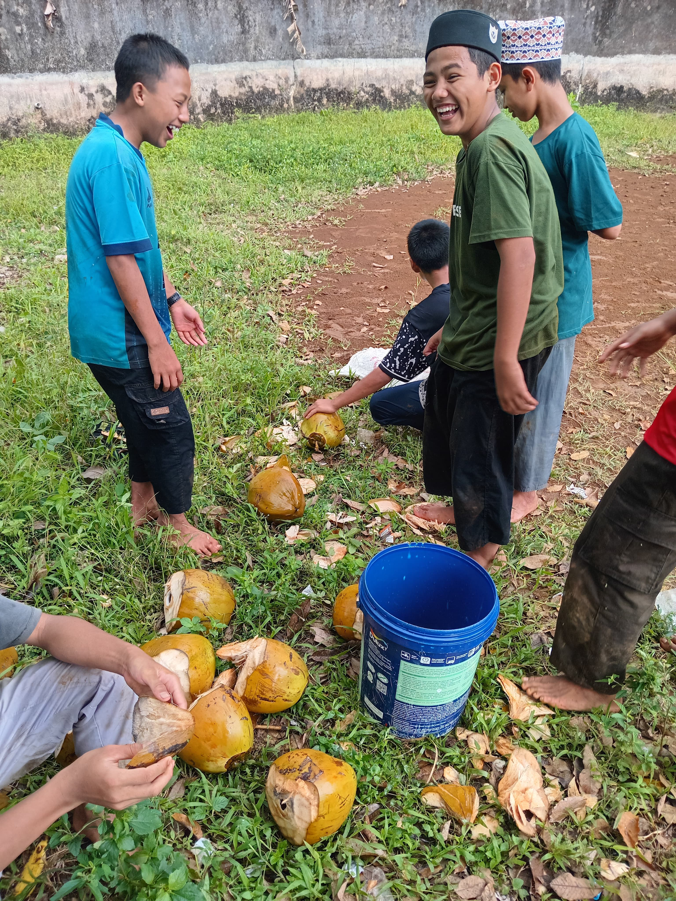

BERANDA
TENTANG
BERITA
DATA
KONTAK
Data Kami
Ustadz
NAMA
JABATAN
Ust Khusnul
Pengurus utama
Ust Abdurrahman
Tahfidz
Ust Hamdani
Bahasa
Ust Wahyu
kebersihan
Hafalan Santri
NAMA
Total Hafalan
Qois
30 juz
Afif
10 juz
Khairul
15 juz
Abdullah
20 juz
Pesantrenku
tempat di mana banyak impian diciptakan

Alim

Kebersamaan

Ceria
Kontak kami
Darul Mukhlasin Banjarnegara
Darul Mukhlasin Banjarnegara
Darul Mukhlasin Banjarnegara
Darul Mukhlasin Banjarnegara
Menjadi
setiap orang tua